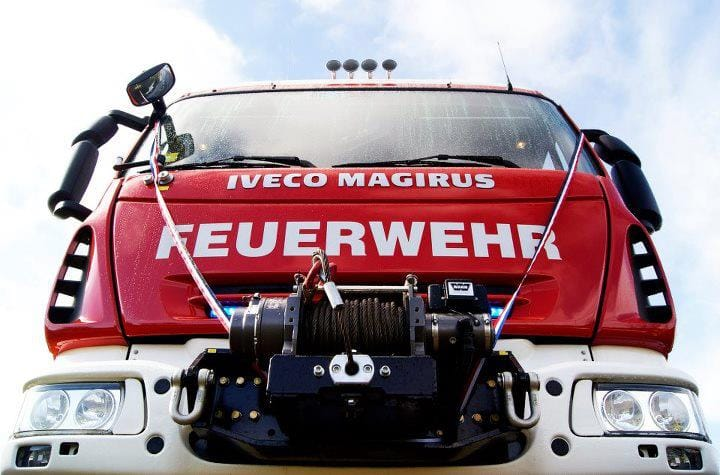

Unidad BX-5Iveco Magirus FF150E30W 4x4. Unidad mixta de incendio y rescate. Unidad B-5Iveco Magirus FF150E30. Unidad de control de incendios.
Unidad B-5Iveco Magirus FF150E30. Unidad de control de incendios.


Embarcación Harbor 28, construído por los astilleros Marco para descontaminación de aguas.
– Unidad de Rescate Medioambiental, entregada a la Quinta por el Gobierno Regional del Bío Bío.
– Única en Sudamérica para limpieza de recursos hídricos costeros.
– Presta servicio a empresas pesqueras e industrias pesadas ante derrames de combustible o limpieza regular de sitios costeros.
– Diseñada y construida en los astilleros MARCO de Iquique.